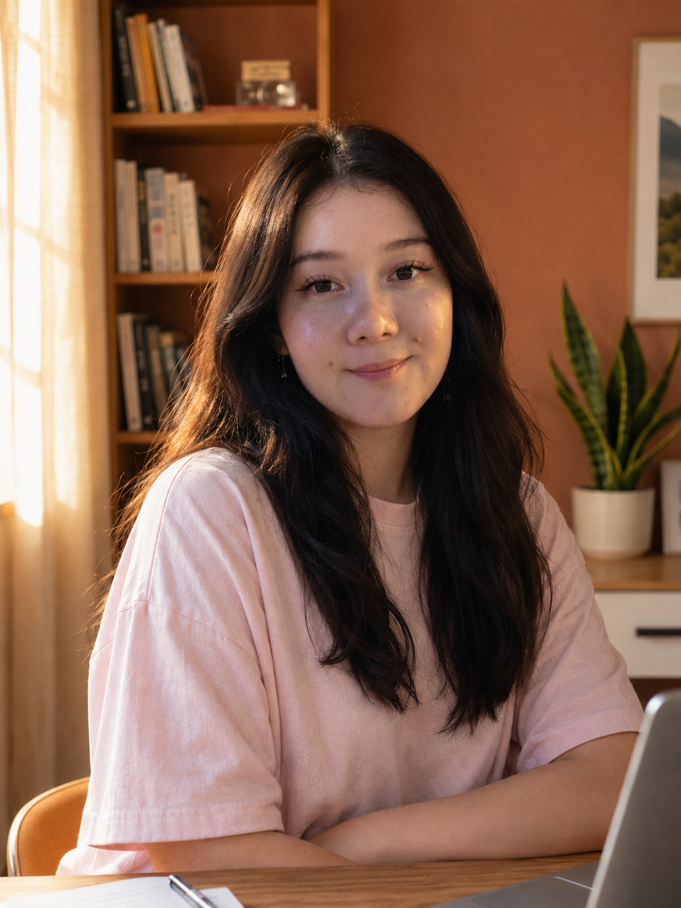

Репетитор по корейскому языку — это тяжело,
но со мной он станет любовью
❤
Лина — профессиональный преподаватель с 6-летним стажем. 8 лет в языке, диплом КФУ, уровень TOPIK 5. Учу так, чтобы каждое занятие хотелось продолжить.

Учу не для галочки —
от души.
Я преподаю не для галочки, а потому что искренне люблю это дело. Корейский — мой путь длиной в 8 лет, и я веду по нему своих учеников бережно и без воды.
«Когда ученик впервые понимает строчку песни без перевода — это и есть момент, ради которого я работаю».
Что я действительно могу вам пообещать?
Никаких маркетинговых обещаний «выучить за месяц». Только три честных вещи, за которые я отвечаю каждым уроком.
Полноценный пробный урок
Никакой «пустой воды» и часа, потраченного на планирование. Сразу учимся, сразу — результат, и сразу понятно, подходим ли мы друг другу.
Стану вашим проводником
И мотивацией, когда станет тяжело. Корейский требует терпения — я рядом в моменты, когда хочется всё бросить.
Влюбить в язык
Главная цель — не зазубривание, а та самая искра, после которой корейский перестаёт быть «трудным» и становится своим.
Почему мои уроки другие.
Пять вещей, которые отличают занятие со мной от стандартного курса. Каждая — выстрадана годами практики.
Авторские презентации
Крутой кастомный материал, собранный за годы. Никаких скучных PDF из интернета — каждый слайд под тему урока.
Динамика урока
Интерактивы и мини-сюрприз в конце каждого занятия — чтобы вы уходили улыбаясь.
Погружение в культуру
Кусочки из дорам, шоу и песен — язык не из учебника, а живой, как у носителей.
Виртуальные ролевые игры
Интерактивные сценарии, в которых вы «заходите» в магазины и кафе Кореи и говорите по-настоящему.
Комфорт прежде всего
Дружеская атмосфера и уроки, которые подстраиваются под вашу обратную связь — без давления и оценок.
Прозрачно. Без подписок.
Платите за один урок — без обязательств и абонементов. Цены за индивидуальное занятие 60 минут, если не указано иное.
Без абонементов. Не подошло — не платите за следующий. Я работаю на ваше доверие, а не на удержание.
Как это устроено.
Минимум формальностей. Договорились — провели урок — двигаемся дальше.
Без подписок
Pay-as-you-go: оплачиваете каждый урок отдельно, никаких длинных абонементов и заморозок.
Гибкое расписание
Не нужно фиксировать одни и те же дни недели — договариваемся под вашу неделю.
Платформы
Использую PM для интерактивных домашек и удобные альтернативы Zoom — без скачивания приложений.